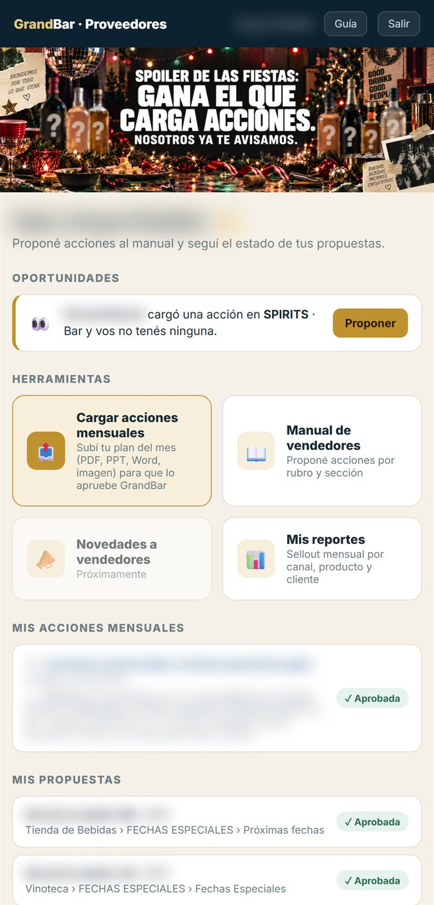
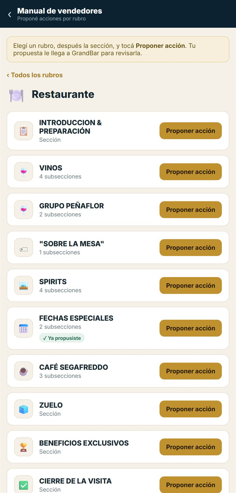
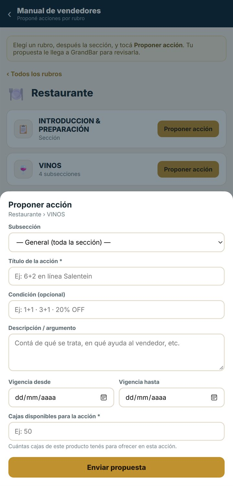
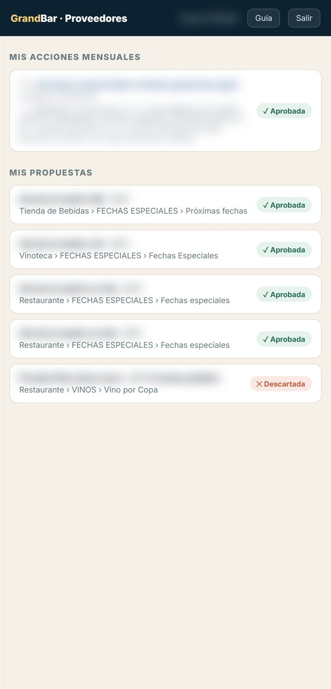

Cómo proponer acciones para el manual que usan los vendedores de GrandBar en cada visita, subir tu plan del mes y seguir cada propuesta y tu sellout, pantalla por pantalla.
Para proveedores y bodegas de GrandBarVersión octubre 2026Ayuda WhatsApp +54 9 261 245-2651
Parte I · Empezar
01
Qué es el portal
El lugar donde tu marca le propone acciones a GrandBar para que sus vendedores las presenten en cada visita.
Los vendedores de GrandBar recorren cada punto de venta con un manual en el celular. El manual cambia según el tipo de cliente (restaurante, bar, vinoteca, autoservicio y otros) y está ordenado en secciones: vinos, spirits, fechas especiales y las demás. En cada sección el vendedor ve las acciones vigentes y se las ofrece al cliente.
Cómo llega tu acción al vendedor
Proponés. Desde el portal cargás tu acción en el tipo de cliente y la sección que corresponde, o subís tu plan completo del mes.
GrandBar la revisa. El equipo comercial de GrandBar la aprueba, te pide cambios o la descarta. El estado lo ves en el portal.
Se suma al manual. Si se aprueba, GrandBar la carga en el manual de los vendedores, en la sección que corresponde.
El vendedor la presenta. En la visita la ve en esa sección y se la ofrece al cliente.
Dos formas de proponer
Cargar acciones mensuales
Subís un archivo con todo tu plan del mes (PDF, PowerPoint, Word, Excel o imagen). Sección 4.
Manual de vendedores
Proponés una acción puntual en una sección del manual, con su condición, su vigencia y las cajas que tenés para ofrecer. Secciones 5 a 7.
Todo el portal arranca acá: qué proponer, las herramientas y cómo va cada cosa que mandaste.
Arriba a la derecha aparece el nombre de tu empresa. Si en tu empresa hay más de un usuario, todos ven lo mismo: las mismas propuestas y los mismos archivos.
Qué hay en la pantalla
La imagen de GrandBar con novedades para los proveedores. La cambia GrandBar.
Oportunidades: secciones del manual donde otros proveedores tienen propuestas y vos no. Sección 8.
Herramientas: Cargar acciones mensuales (sección 4), Manual de vendedores (secciones 5 a 7) y Mis reportes (sección 11). Novedades a vendedores dice Próximamente: todavía no está disponible.
Mis acciones mensuales: los archivos que subiste, con su estado.
Mis propuestas: las acciones que propusiste en el manual, con su estado. Sección 9.

12345
Figura 2 · La pantalla de inicio. Los nombres y los títulos están difuminados.
Subí tu plan de acciones del mes en un archivo para que GrandBar lo revise.
En el inicio, tocá Cargar acciones mensuales.
Tocá Elegir archivo y elegí tu plan. Puede ser PDF, PowerPoint, Word, Excel o una imagen, de hasta 50 MB. Si el PowerPoint pesa mucho, exportalo a PDF.
Si querés aclararle algo a GrandBar, escribilo en Observaciones. Es opcional.
Tocá Enviar a GrandBar. Cuando termina de subir, dice “Enviado. GrandBar lo va a revisar.”
La fecha de carga se pone sola. El archivo aparece en Mis acciones mensuales, en el inicio, como Pendiente. Tocá su nombre para abrirlo.
Si te piden cambios
Debajo del archivo aparece la nota de GrandBar. El archivo enviado no se puede reemplazar: corregí tu plan y subilo de nuevo con Cargar acciones mensuales.
Para proponer una acción puntual, primero elegís a qué tipo de cliente va.
En el inicio, tocá Manual de vendedores.
Tocá el rubro: Restaurante, Bar, Vinoteca, Autoservicio, Tienda de Bebidas, Hotel, Disco, Evento o Mayorista. Cada tarjeta dice cuántas secciones tiene su manual.
Cada rubro tiene su propio recorrido, con sus propias secciones. Si tu acción sirve para varios tipos de cliente, proponela en cada uno.
Para volver al inicio, tocá la flecha ‹ de arriba a la izquierda.
Las secciones son las mismas que recorre el vendedor en la visita.
Qué hay en la pantalla
‹ Todos los rubros vuelve a la lista de rubros.
Cada sección del manual, con cuántas subsecciones tiene. A la derecha, Proponer acción abre el formulario en esa sección.
Las marcas de cada sección: ✓ Ya propusiste si tenés una propuesta pendiente o aprobada ahí, y N de otros con cuántos otros proveedores tienen propuestas en esa sección.
Para tener en cuenta
Algunas secciones son pasos del recorrido, como la introducción o el cierre de la visita. Proponé en la sección donde el vendedor va a mostrar tu producto.

123
Figura 5 · Las secciones del manual de restaurantes.
El formulario se abre desde abajo y arriba dice dónde estás proponiendo (por ejemplo, Restaurante › VINOS).
Subsección: elegí una si tu acción va a una parte puntual de la sección. Con General (toda la sección) va a la sección entera.
Título de la acción (obligatorio), Condición (por ejemplo, 3+1 o un porcentaje de descuento) y Descripción / argumento: de qué se trata y en qué le sirve al vendedor.
Vigencia desde y hasta: las fechas en que vale la acción.
Cajas disponibles para la acción (obligatorio): cuántas cajas de ese producto tenés para ofrecer. Así GrandBar sabe hasta dónde puede vender.
Enviar propuesta. Aparece el aviso “Propuesta enviada a GrandBar” y la sección queda marcada con ✓ Ya propusiste.
Los campos con asterisco (*) son obligatorios: si falta alguno, el portal te avisa y no envía.
Pedir evidencia
Al final del formulario de una acción está la casilla Pide evidencia. Marcala si querés saber en qué clientes se hizo la acción. GrandBar decide si la acción lleva evidencia; si la lleva, arma una placa de la acción. Cuando un vendedor la cierra, le manda al cliente esa placa con su logo, y a vos te llega el aviso con el cliente y el día (sección 9).
Mix Ideal y Vino por Copa
Si elegís una subsección de Mix Ideal o de Vino por Copa (o Copa de bienvenida), el formulario cambia y arriba aparece una etiqueta con el tipo.
Mix Ideal
Nombre del mix, nivel (opcional), los productos que incluye (uno por línea), el precio del combo (opcional) y una nota para el vendedor (opcional).
Vino por Copa
Nombre del vino, la condición especial para venderlo por copa, el precio de la botella (opcional) y una nota para el vendedor (opcional).
En los dos casos también se piden las cajas disponibles.

12345
Figura 6 · El formulario de una acción en Restaurante › VINOS. Los ejemplos grises son del propio formulario.
En el inicio (figura 2, marca 2), Oportunidades muestra hasta seis secciones donde otros proveedores tienen propuestas pendientes o aprobadas y vos no tenés ninguna. Cada aviso dice qué proveedor, en qué sección y en qué rubro.
Tocá Proponer en el aviso.
Se abre el manual con el formulario ya puesto en esa sección. Completalo como en la sección 7.
Si tenés propuestas en todas las secciones donde hay movimiento, en lugar de los avisos dice “Estás cubriendo todas las secciones donde hay movimiento”.
Para tener en cuenta
Funciona igual para todos: cuando proponés en una sección, los otros proveedores ven que tu empresa tiene una propuesta ahí. No ven qué propusiste.
En el inicio, debajo de las herramientas, ves cómo va cada cosa que mandaste.
Mis acciones mensuales: cada archivo, con la fecha de carga y tus observaciones. Tocá el nombre para abrirlo.
Mis propuestas: el título y la condición, y abajo el rubro, la sección y la subsección, con las cajas disponibles.
A la derecha de cada una, su estado.
Los estados
⏳ Pendiente
GrandBar todavía no la revisó.
✓ Aprobada
GrandBar la aceptó para el manual de los vendedores.
✎ Te pidieron cambios
Debajo aparece la nota con lo que hay que cambiar. En las propuestas aparece también el botón ✎ Editar y reenviar (sección 10). En los archivos, subí el plan corregido de nuevo (sección 4).
✕ Descartada
No se va a usar. Si GrandBar dejó una nota, aparece debajo.
Evidencias de tus acciones
Si una propuesta pide evidencia, debajo dice en qué va: primero que GrandBar está armando la placa y, cuando la acción ya está en el manual, que te avisan cada vez que se manda.
Arriba de tus acciones mensuales está Evidencias de mis acciones: cada vez que un vendedor le manda la placa a un cliente aparece una fila con la acción, el cliente (nombre, código, rubro y dirección), el día y la hora, el vendedor y la placa que se mandó. Tocá la placa para verla grande. El aviso también te llega a la campanita, arriba a la derecha.

123
Figura 7 · La parte de abajo del inicio. Los títulos y los archivos están difuminados.
Para que te ayuden más rápido, contá en qué pantalla estabas, qué tocaste y qué esperabas que pasara. Si podés, mandá una captura.
Preguntas frecuentes
¿Quién revisa lo que propongo?
El equipo comercial de GrandBar. Ellos deciden qué acciones se suman al manual de los vendedores y en qué secciones.
¿Cuándo sé si me aprobaron una propuesta?
Cuando cambia su estado en Mis propuestas, en el inicio del portal. Entrá cada tanto a revisarlo.
¿Qué diferencia hay entre cargar acciones mensuales y proponer en el manual?
Las acciones mensuales son un archivo con todo tu plan del mes. En el manual proponés una acción puntual, en la sección exacta donde la va a ver el vendedor, con su condición, su vigencia y las cajas disponibles.
¿Puedo cambiar una propuesta que ya mandé?
Solo cuando te piden cambios (sección 10). Si no, mandá una propuesta nueva y aclaralo en la descripción.
¿Los otros proveedores ven mis propuestas?
Ven que tu empresa tiene una propuesta en una sección, en Oportunidades y en el contador de cada sección. No ven el contenido.
En mi empresa somos varios. ¿Cada uno ve lo suyo?
No: todos los usuarios de la misma empresa ven las mismas propuestas y los mismos archivos. Si necesitás un usuario para otra persona, pedíselo a GrandBar.
¿Por qué no veo nada en Mis reportes?
Porque GrandBar todavía no cargó tu sellout. Cuando lo suba, lo vas a ver ahí.
El archivo no se sube.
Puede pesar hasta 50 MB y ser PDF, PowerPoint, Word, Excel o una imagen. Si es un PowerPoint pesado, exportalo a PDF y probá de nuevo.
Me olvidé la contraseña.
En la pantalla de ingreso, escribí tu email y tocá ¿Olvidaste tu contraseña?. Se abre WhatsApp con soporte para restablecerla.
¿Funciona en la compu?
Sí. En la compu las pantallas se ven más anchas, con las mismas opciones.